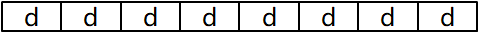
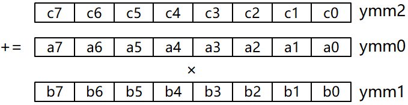

实验原理
数据并行
向量指令能够加速的原理主要基于 SIMD（单指令多数据）技术。SIMD 允许单条 CPU 指令同时对多个数据执行操作，这样可以显著提高处理大量数据时的效率。
向量指令能够加速的关键原理如下:
-
并行处理多个数据元素: 向量指令允许处理器同时操作多个数据元素，这些数据元素通常存储在一个向量寄存器中。例如，一条向量加法指令可以同时将两个向量寄存器中的对应元素相加，并将结果存储在另一个向量寄存器中。这意味着一条指令可以完成多个标量操作，从而显著提高数据处理的速度。
-
更高效的内存访问: 向量指令通常设计成能有效地处理连续内存中的数据。由于数据在内存中通常是连续存放的，因此向量加载和存储指令可以一次读取或写入多个连续的数据元素，减少了内存访问次数，提高了带宽利用率。
-
优化的数据路径：现代处理器内部包含专门设计用于向量运算的数据路径。这些路径通常具有更高的吞吐量，并且针对向量运算进行了优化，使得在执行诸如向量加法、乘法等操作时比传统的标量运算更快。
-
减少分支预测错误：在执行非向量代码时，分支预测错误会导致流水线停顿，从而降低性能。而向量指令通常涉及的是简单的算术逻辑操作，没有复杂的条件判断，因此减少了因分支预测错误带来的性能损失。
-
提高指令级并行度（ILP）：向量指令可以通过在每个时钟周期内执行更多操作来提高处理器的指令级并行度。这使得处理器可以在同一时间内处理更多的计算任务，从而提高整体性能。
现代处理器大多支持 SIMD 指令，如 Intel 的 SSE、AVX 或 ARM 的 NEON、SVE。若需了解更多处理器对 SIMD 指令的支持情况请查阅处理器厂商提供的使用手册。
利用数据并行实现加速的常用方法包括循环展开、使用向量指令，以及使用基于共享内存实现多线程并行编程的 OpenMP 库。
1. 循环展开
为了充分发挥流水线 CPU 的性能，必须尽量减少流水线停顿，使其满负荷运行。因此，需要充分开发指令之间存在的并行性，找出不相关的指令序列，使其在流水线中重叠执行。
循环展开（Loop Unrolling）是指将循环体的代码复制多次并按顺序排放，然后相应调整循环结束的条件。循环展开能够挖掘循环的不同迭代之间存在的并行性 —— 原本多个迭代的循环体代码能够在循环展开后被合并起来，给编译器和处理器提供更大的调度和优化空间。此外，循环展开后，循环次数成倍减少，从而分支指令和循环控制的开销也随之降低。
2. AVX指令
MMX（MultiMedia eXtension）、SSE（Streaming SIMD Extension）和AVX（Advanced Vector eXtensions）都是 Intel 处理器的 SIMD 指令集。其中，AVX 在 MMX 和 SSE 指令集的基础上，将128位的 SIMD 寄存器扩展至256位及以上，并且增加了对非结构化操作以及3操作数甚至4操作数的支持，提升了指令的灵活性和功能性。此外，AVX 指令集支持融合的乘加指令 FMAdd（Fused-Multiply-Add），能够通过单条指令实现形如 的乘加运算。
AVX 具有16个256位的向量寄存器 YMM0 ~ YMM15。一个 AVX 寄存器能够存储8个32位单精度浮点数（或4个64位双精度浮点数），存储单个数据的字段称为向量寄存器的单元或元素（Element），如图2-1所示。
使用 AVX 指令进行运算时，需先将数据从内存加载到 AVX 寄存器，并在运算完毕后，再将运算结果从 AVX 寄存器保存回内存中。
常用的 AVX 指令如表2-1所示。
| 指令 | 说明 | 使用示例 |
|---|---|---|
vbroadcastssvbroadcastsdvbroadcastf128 |
从内存加载一个 32位 / 64位 / 128位 的操作数，并将其广播到向量寄存器的每个单元中 | vbroadcastss (%rax), %ymm0设 d=MEM[%rax]，则指令执行后，ymm0寄存器为： |
vmovupsvmovdquvmovapd |
在内存和AVX寄存器之间移动 未对齐的单精度 / 未对齐的双精度 / 对齐的双精度 浮点数 | vmovups %ymm0, (%rax)将 ymm0寄存器中的8个float浮点数存储到MEM[%rax] |
vfmadd231psvaddpsvsubpsvmulpsvdivpsvsqrtps |
执行256位的 乘加 / 加 / 减 / 乘 / 除 / 开平方 运算，指令后缀的s表示操作数类型是单精度浮点 |
vfmadd231ps %ymm0, %ymm1, %ymm2计算 ymm2 += ymm0 * ymm1，且对向量寄存器的每个单元，均有ymm2[i] += ymm0[i] * ymm1[i] |
3. OpenMP
OpenMP（Open specifications for Multi Processing）是一个支持以共享内存方式实现多线程并行处理的编程库。OpenMP提供嵌入到高级语言的编译指令/原语，从而将串行代码并行化。OpenMP支持不同粒度的并行化。此外，OpenMP简化了线程的使用，不需要开发者自行考虑线程的创建、同步、负载均衡等操作。
使用OpenMP实现多线程并行加速的基本步骤包括计算任务划分、数据传输、子任务结果整合、子任务计算逻辑实现、线程创建等，详情可参考OpenMP的官方文档。